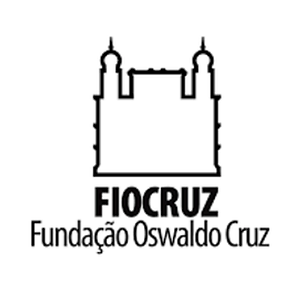
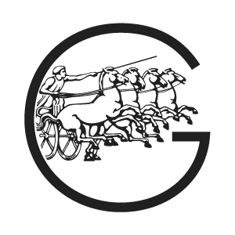
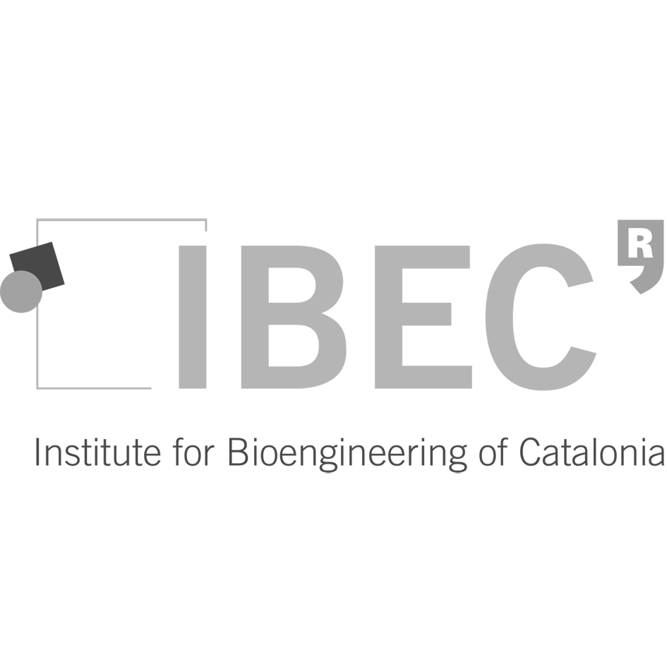
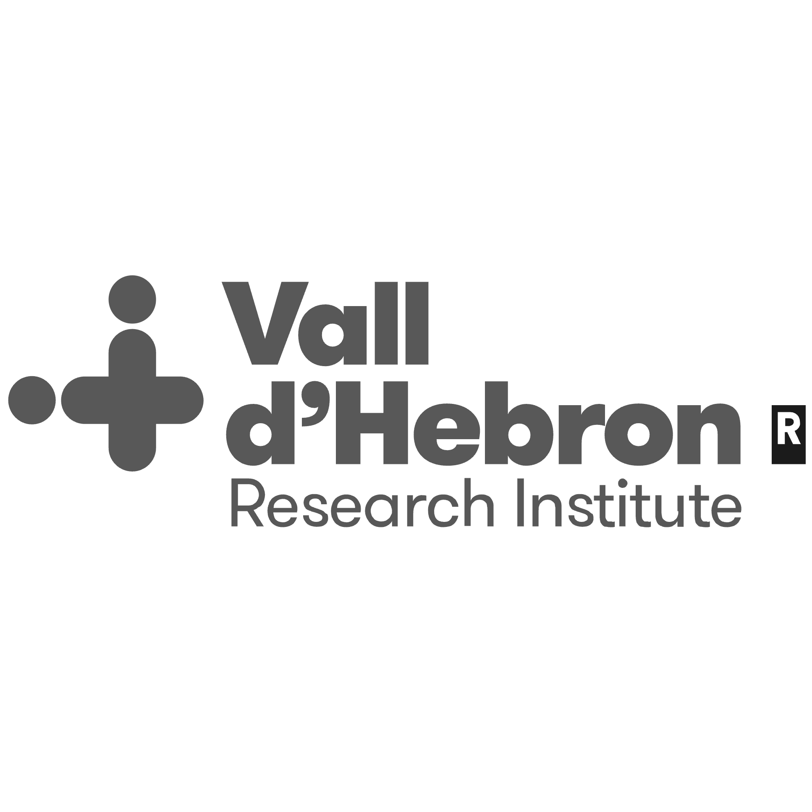
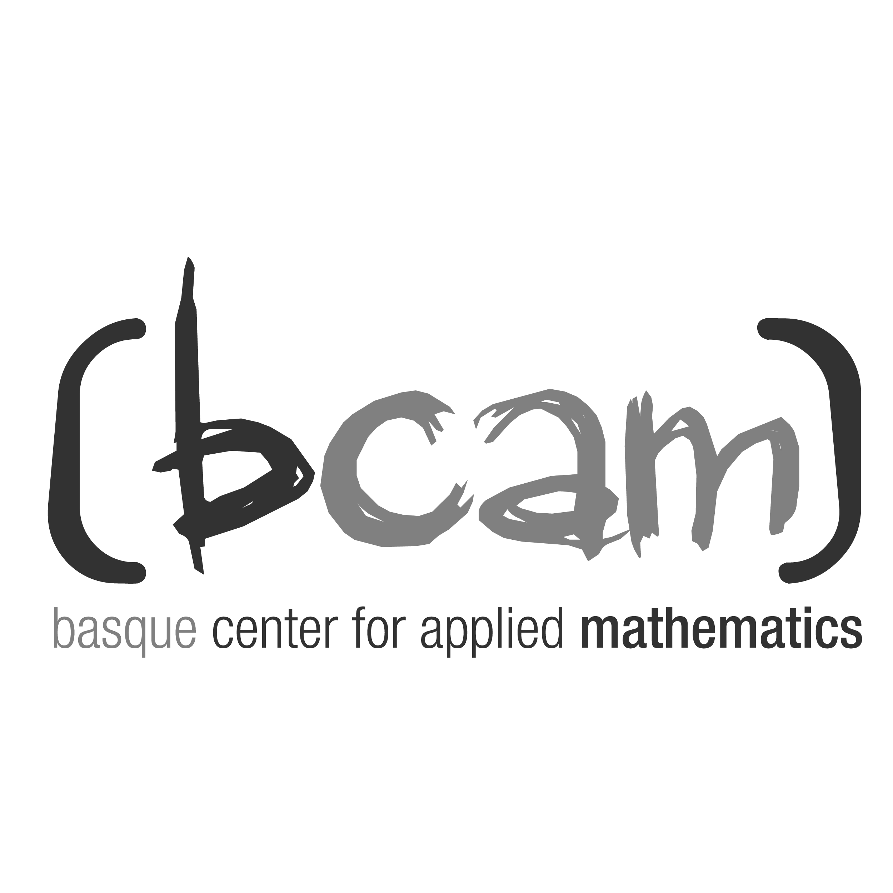

Our adventures surfing the bleeding edge
Get one-on-one expert support for your individual problem
Gain expertise or train your team.
Welcome. The Aurora is a non-profit collective of scholars, with a strong emphasis on hard science, without ever losing the tenderness of the humanities, nor losing our humanity itself. At the Aurora and in its many spaces we strive to create an inclusive environment for people of all ages, genders, nationalities, educational backgrounds, and other dimensions of human diversity.
We are Scientists. We believe science is an essential tool for humanity to discover the world. We are also humans, we believe our humanity is what constitutes society – while artificial intelligence has an increasing role, it cannot replace natural self-awareness, empathy, and reflective critical thinking. We believe people can become well-versed in cutting-edge science and technology at the same time that they understand the social and political context in which we are all immersed, and progress towards a better and more just world. Whether they are a school-aged child who just started to develop a systematic understanding of knowledge, or a patents lawyer with twenty years experience in a very specific job, learning to think critically, understand science, coding, or mathematics should be both useful and exciting.
Overall, our vision is a knowledge ecosystem with low barriers for anyone who is interested in learning about what is known as well as generating knowledge that does not yet exist. Our mission is to refound the place of knowledge as alternatives to the gatekept ‘Ivory Tower’ of Academia – check out what we have to offer in the form of courses, workshops, individual consulting, or collaborative research.
M.Sc., M.P.H., Ph.D.
Chief of Artificial Intelligence (AIC)
Applied Mathematics, Statistical Modeling, Scientific Computing, Data Science
M.Sc., Ph.D.
Culture & Education Officer (CEO)
Critical & Scientific Thinking, Communication, Responsible Research
M.Sc., Ph.D.
Computational, Systems & Oscillations Officer (CSO)
Signal Processing, Dynamical Systems, Systems Science, Dynamic Data Visualization




